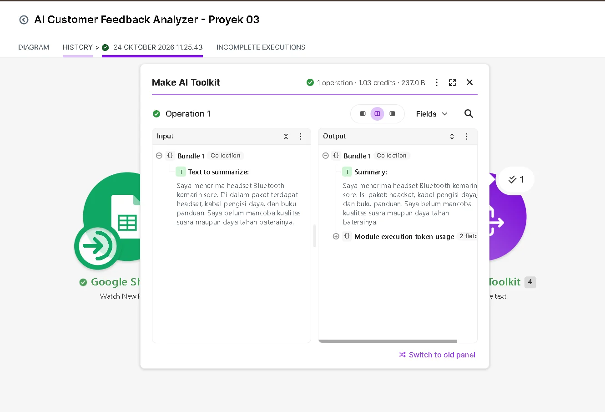
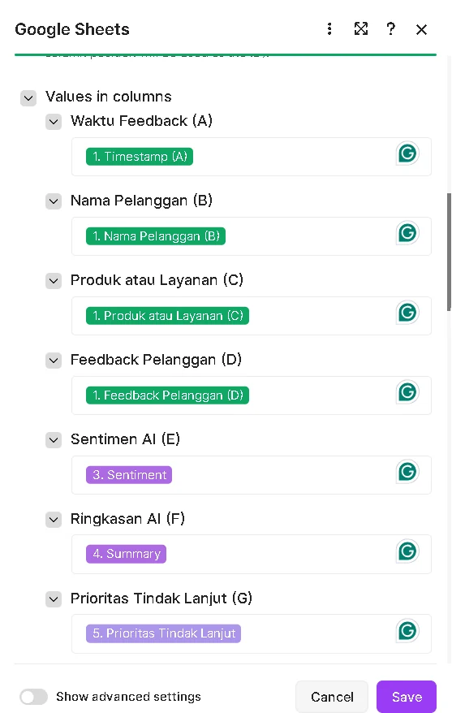
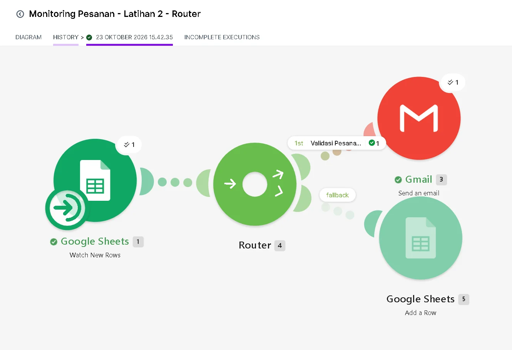
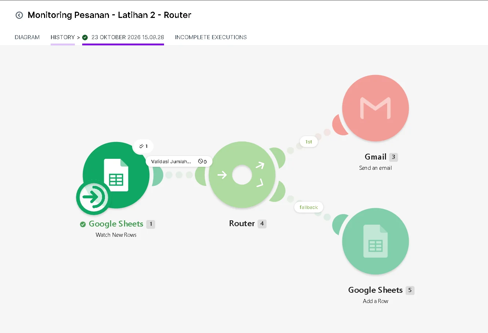

PROJECT / 012026
★★★★★
✳● ANALYZED
DEMO OTOMASI2026
AI Customer Feedback Analyzer
Demo alur pengumpulan umpan balik pelanggan dan pengelolaan hasil analisis menggunakan Make.com dan Google Workspace.
Make.comGoogle FormsGoogle Sheets
Tiga contoh pengerjaan: demo otomasi, prototipe, dan sistem internal.
Pilihan proyek teknis dan prototipe otomasi yang saya kembangkan.
Buka setiap halaman proyek untuk melihat alur kerja, pengujian, dan contoh interaktif. Diagram ditandai sebagai ilustrasi konsep.
Demo alur pengumpulan umpan balik pelanggan dan pengelolaan hasil analisis menggunakan Make.com dan Google Workspace.
Workflow notifikasi email dengan validasi input, percabangan kondisi, dan pencatatan khusus untuk pesanan yang tidak valid.
Sistem pelaporan berbasis peran untuk logbook, downtime DVB-T2, laporan gangguan, rekap bulanan, dan audit trail.
Empat screenshot dari dua proyek otomasi. Klik gambar untuk memperbesar, atau buka studi kasus untuk membaca konteks pengujiannya.




Gambar merupakan bukti pengujian dan konfigurasi workflow, bukan klaim implementasi produksi pada klien berbayar.